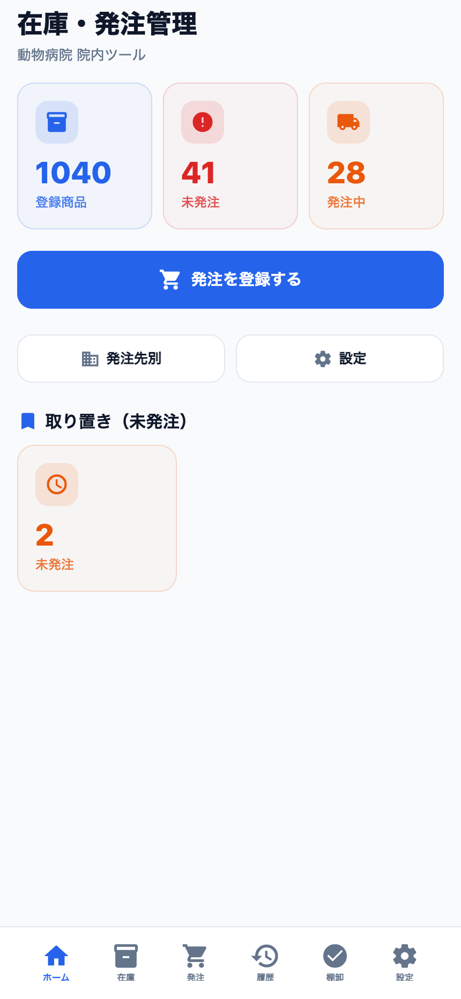
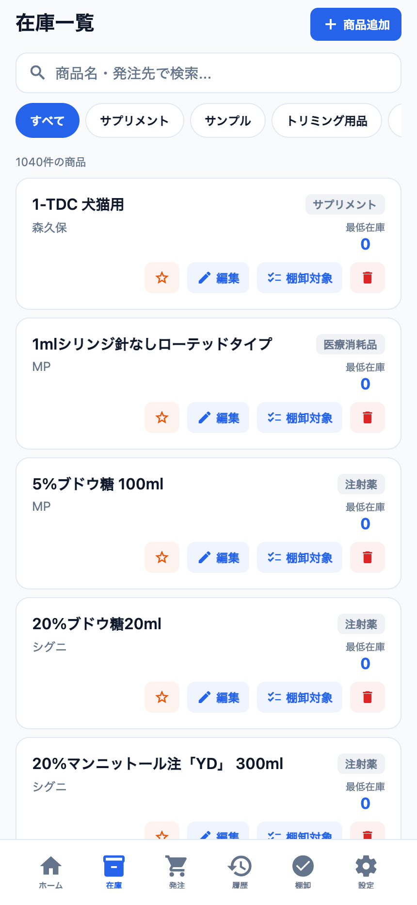
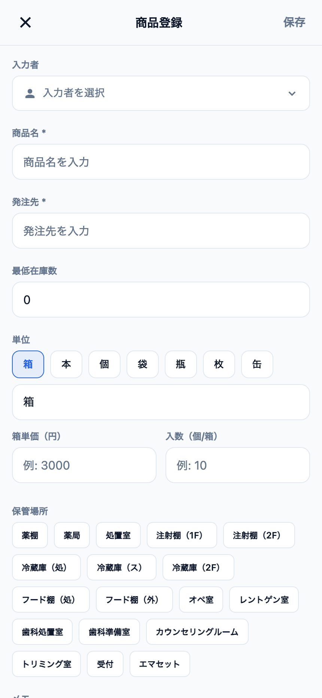
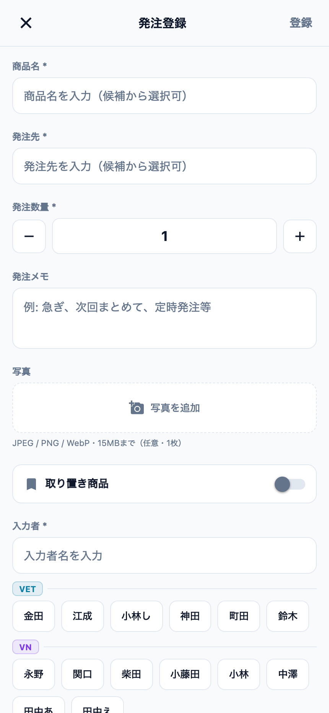
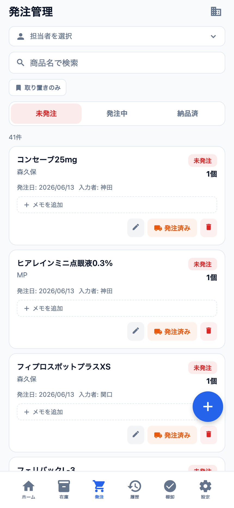
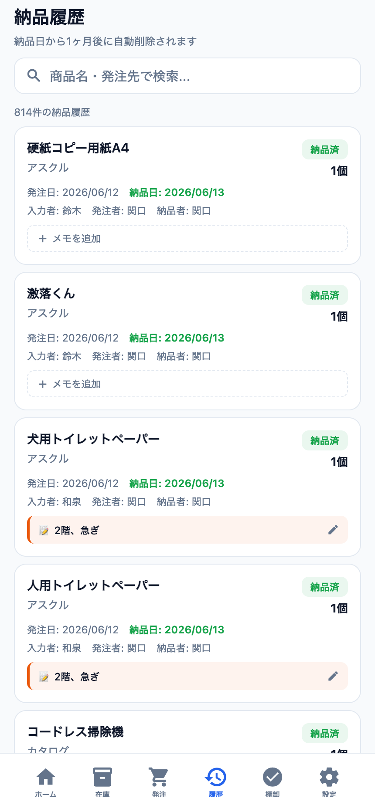
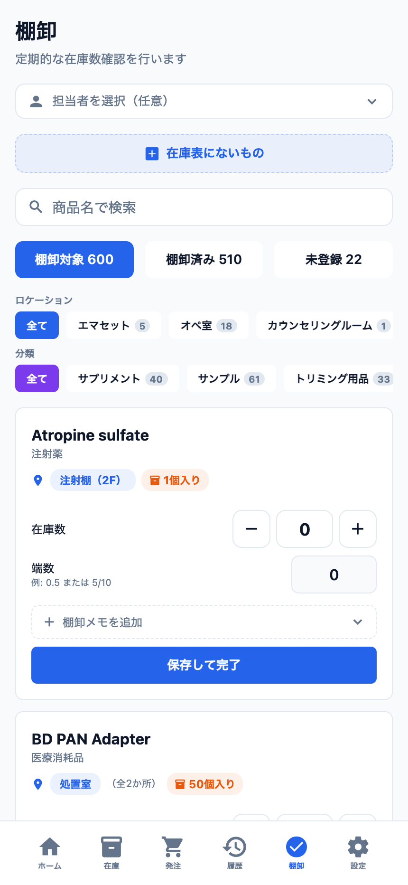
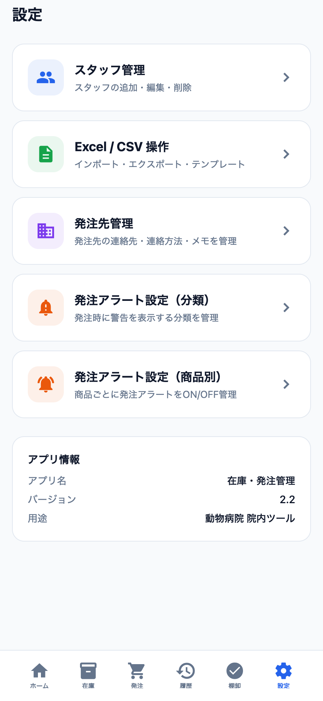
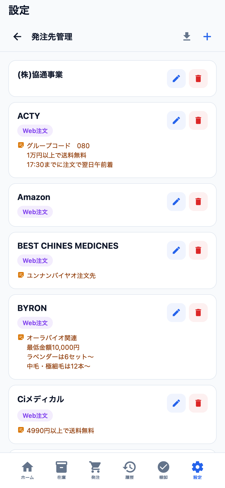
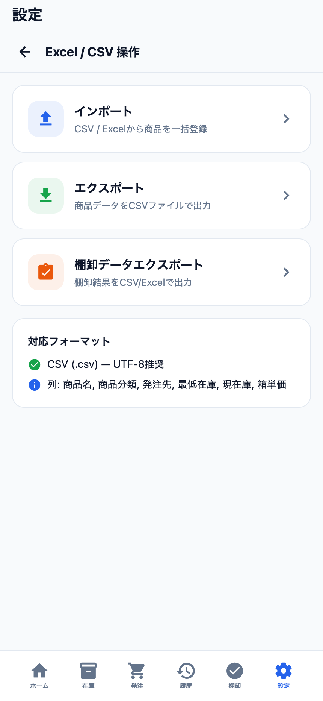

在庫・発注管理アプリ 使い方ガイド
← ガイド一覧へ
受付・スタッフ向け ｜ 2026年6月20日版 ｜ 荻窪ツイン動物病院
30秒まとめ
院内の
在庫と
発注を1つで管理するアプリです（バージョン2.2）。足りない商品を
「発注を登録」→ 実際に注文したら
「発注済み」→ 届いたら
「納品済」にすると履歴に記録されます。ときどき
棚卸で実数を合わせ、
設定でスタッフ・発注先・発注アラート・Excel/CSVを管理します。商品は現在
1,040件登録されています。
橙 = スタッフの操作
緑 = 自動
アクセス（院内PC・iPad・スマホ・院外も可）
・院内PC（LAN）：https://192.168.20.250:3000（Edge / Chrome）
・iPhone / iPad・院外：https://serverpc.tail2de5bb.ts.net（Tailscale を ON。証明書警告なし）
※ 院内PC（LAN）は院内ツールのため、初回は「この接続ではプライバシーが保護されません」等の証明書の警告が出ることがあります。「詳細設定 → アクセスする（続行）」で進んで問題ありません（Tailscaleの方は警告は出ません）。
※ iPhone / iPad で初めて使うときは、Tailscale のインストールとログイン（初回設定）が必要です。Gmailの二段階認証が要るため、初回設定は院長が行います。
※ Safari で開いたら「ホーム画面に追加」→「Webアプリとして表示」を ON にすると、アプリのように使えます。
※ うまく開けないときは、mini PC の電源・在庫アプリの起動・Tailscale が「Connected」か・URLの綴りを確認してください。
※ 画面下部の6つのタブ（ホーム／在庫／発注／履歴／棚卸／設定）で切り替えます。
1. 画面の全体像（下部の6タブ）
🏠 ホーム発注の入口・取り置き確認・件数の一覧
📦 在庫全商品の一覧・検索・商品の登録/編集
🛒 発注発注の管理（未発注→発注中→納品済）
🧾 履歴納品の記録（1か月で自動削除）
✅ 棚卸実在庫数の確認・つき合わせ
⚙️ 設定スタッフ・発注先・アラート・CSV

▲ ホーム：登録商品／未発注／発注中の件数、「発注を登録する」、取り置き（未発注）
2. 基本の流れ
① 足りない商品に気づく
「在庫」タブで残数を確認、または最低在庫・発注アラートで気づきます。
▼
② 「発注を登録する」で発注リストに追加
ホームの🛒 発注を登録するから商品・発注先・数量を入れて登録。この時点では「未発注（取り置き）」です。
▼
③ 実際に注文したら「発注済み」
発注先へ注文したら、発注タブで各商品の🚚 発注済みを押す → ステータスが「発注中」に変わります。
▼
④ 届いたら「納品済」に
納品されたら「納品済」にします。「履歴」に発注者・納品者つきで記録されます。
▼
⑤ ときどき棚卸で実数合わせ
「棚卸」タブで、保管場所ごとに実際の在庫数を数えてつき合わせます。
3. 発注のステータス
未発注発注リストに入れただけ。まだ注文していない（取り置き含む）
▶
発注中「発注済み」を押した状態。納品待ち
▶
納品済届いた。履歴に記録される
「発注」タブの上部タブで切り替え、担当者・取り置きのみでの絞り込みや、商品名での検索ができます。画面右上の建物マークで発注先ごとに絞り込めます。
- まとめて変更：発注カードを長押しすると複数選択モードになり、同じ発注先の商品などを一括でステータス変更できます。
- 押し間違えたら：各カードの「戻す」で1つ前のステータスに戻せます。
4. 在庫タブ（商品の一覧・登録・編集）
全商品の一覧です。上の検索（商品名・発注先）と分類チップ（すべて／サプリメント／注射薬／医療消耗品 …）で絞り込めます。各商品カードには ☆お気に入り ／ ✏編集 ／ ✓棚卸対象 ／ 🗑削除 のボタンがあります。

▲ 在庫一覧：商品名・発注先・分類・最低在庫と、各種ボタン

▲ 商品登録／編集：必須は「商品名・発注先・分類」
商品の新規登録・編集
右上の＋ 商品追加、または各商品の✏編集から、次の項目を設定します（*は必須）。
| 項目 | 内容 |
|---|
| 商品名 * | 商品の名前。 |
| 発注先 * | どこに注文するか（候補から選択可）。 |
| 分類 * | 注射薬・内服薬・医療消耗品・処方食 など。+ 自由入力で新しい分類も追加できます。 |
| 最低在庫数 | これを下回ったら発注の目安。 |
| 単位 | 箱／本／個／袋／瓶／枚／缶。 |
| 箱単価（円）・入数（個/箱） | 箱の値段と、1箱に何個入りか。入れると「1個あたり単価」が自動計算されます（例：¥3,010）。 |
| 保管場所 | 薬棚・処置室・注射棚（1F/2F）・冷蔵庫（処/ス/2F）・フード棚（処/外）・歯科処置室・歯科準備室・受付 など。棚卸でこの場所ごとに数えます。 |
| 発注アラート | ONにすると、この商品を発注登録するとき確認ダイアログが出ます。 |
| 棚卸し対象 | ONにすると棚卸の数量確認の対象になります。 |
| メモ | 自由メモ。 |
入力後、右上の「保存」で確定します。
在庫数（現在庫）はこの編集フォームにはありません。現在庫は棚卸やCSVインポートで管理します。一覧に出る「最低在庫」は“これを下回ったら発注”の目安で、現在庫とは別物です。
5. 発注を登録する スタッフ

▲ 発注登録：商品名・発注先・発注数量が必須。写真や取り置きも指定可

▲ 発注管理：未発注／発注中／納品済で切替。「🚚発注済み」で発注中へ
ホームの🛒 発注を登録する（または発注タブの＋）から登録します。
| 項目 | 内容 |
|---|
| 商品名 * | 入力すると登録済み商品から候補が出ます。 |
| 発注先 * | 候補から選択可。 |
| 発注数量 * | ＋ / − で増減。 |
| 発注メモ | 例：急ぎ、次回まとめて、定時発注 等。 |
| 写真 | JPEG / PNG / WebP・15MBまで（任意・1枚）。現物やラベルの撮影に。 |
| 取り置き商品 | 飼い主さん用に取り置く商品のときON（後述）。 |
| 入力者 * | 自分を選びます（VET／VN／TR のスタッフ一覧から）。 |
最後に右上の「登録」。登録直後は未発注です。実際に注文したら発注タブで「🚚発注済み」を押して発注中にします。
取り置き商品をONにすると、飼い主名・ペット名と連絡ステータス（要連絡／連絡不要、編集時は「連絡済み」も）を記録できます。発注タブ上部の「取り置きのみ」で抽出できます。
取り置き商品の注意（顧客情報）：「取り置き商品」では飼い主さん・ペットのお名前を入れることがあります。これは院内限定の情報です。スクリーンショットを外部に共有したり、画面を院外の人に見せたりしないでください。
6. 履歴タブ（納品の記録）

▲ 納品履歴：発注日・納品日・入力者・発注者・納品者が残る
「納品済」にした商品の記録（いつ・何が・誰が発注/納品したか）が一覧になります。商品名・発注先で検索できます。
注意：納品履歴は「納品日から1か月後」に自動で削除されます。古い記録は残りません。残したい場合は設定のExcel/CSVエクスポートで控えておいてください。
7. 棚卸タブ（実在庫の確認）

▲ 棚卸：保管場所・分類で絞り、入数を見ながら在庫数を入力
定期的に実際の在庫数を数えてつき合わせる画面です。上部に進み具合（棚卸対象／棚卸済み／未登録）が出ます。複数人で同時に作業でき、入力はリアルタイムで反映されます。
- ロケーション（保管場所）で絞り込み：処置室・薬棚・歯科準備室・冷蔵庫…ごとに件数が出るので、場所単位で数えると効率的です。
- 分類で絞り込み：注射薬・医療消耗品・サプリメント…ごとにも絞れます。
- 各商品で 入数（例：50個入り）を見ながら在庫数を入力。半端は端数（例：
0.5 または 5/10）で入れられます。
- 担当者を選択（任意）してから始めると、誰が数えたか分かります。
- 各商品に棚卸メモやチェック（在庫見直し／期限近い／期限切れ／発注注意）を付けられます。
- 数えていて在庫表に無い物が見つかったら「在庫表にないもの」から拾えます（＝未登録の発見）。
- 各商品で「保存して完了」を押すと棚卸済みになります。
- やり直し：棚卸済みを取り消すには、「棚卸済み」タブで商品をタップ →「棚卸対象に戻す」を押します。
「全商品をリセット」に注意：棚卸タブ（棚卸済み）にある「全商品をリセット（棚卸対象に戻す）」は、棚卸済みの記録をすべて消去します。誤って押さないでください。
8. 設定タブ

▲ 設定：スタッフ／発注先／アラート／CSV

▲ 発注先管理：注文方法・送料条件・締め時間などをメモできる

▲ Excel/CSV：一括登録・出力・棚卸データ出力
| 項目 | できること |
|---|
| スタッフ管理 | 担当者の追加・編集・削除。発注・棚卸の「担当者／入力者」に出てきます。 |
| 発注先管理 | 発注先の連絡先・連絡方法（Web注文など）・メモを管理。送料無料の条件・締め時間・グループコード等を書いておけます。新規追加は名前・担当者・電話番号・メモ。「商品データから発注先をインポート」で、登録済み商品の発注先を一括取り込みできます。 |
| 発注アラート設定（分類） | チェックした分類の商品を発注登録するとき、確認アラートを表示。 |
| 発注アラート設定（商品別） | 商品ごとにアラートをON/OFF。 |
| Excel / CSV 操作 | インポート（一括登録）／エクスポート（商品データ）／棚卸データエクスポート。フォーマットは CSV(.csv) UTF-8、列は 商品名, 商品分類, 発注先, 最低在庫, 現在庫, 箱単価。 |
| アプリ情報 | アプリ名「在庫・発注管理」／バージョン 2.2 ／用途の表示。 |
9. 院内運用ルール スタッフ
アプリの操作とあわせて、院内では次のルールで運用します。
客注（取り置き）
- 発注時に、アプリのメモ欄へ「患者名」「電話の有無」「領収（未／済）」を入力。
- 納品時にメモ欄を確認し、内容を付箋に転記して商品に貼る（電話した場合は「tel済み」と記載）。
顧客情報の取り扱い：客注・取り置きでは飼い主名・ペット名（患者名）を入力します。これは院内限定の情報です。画面のスクリーンショットを外部に共有したり、院外の人に画面を見せたりしないでください。
ホワイトボードで管理するもの（アプリでは管理しない）
献花・酸素・医療廃棄は、在庫アプリではなくホワイトボードで管理します。①ホワイトボードに記載 → ②発注・連絡したら線で消す → ③納品・支払い済みになったらホワイトボードから消す。
価格（単価）を変えるとき
①マスタ登録を変更 → ②在庫アプリの各商品の単価を変更。1つずつでも、CSVアップロードでの一括変更でもOKです。
新しく商品を入れるとき
①マスタ登録 → ②在庫アプリに商品登録。商品名は正式名称を入れ、分かりにくいものは普段使う名称も入れておきます（例：リセラメディカルキャップ ブルー（ディスポキャップ、オペ帽））。
院内にあるのに在庫アプリに未登録の商品は、できるだけ追加してください。棚卸に加算するため／後から他の人が発注するときに発注先が分かるようにするためです。
業者（発注先）の情報
設定 → 発注先管理で、各業者の連絡先・（あまり使わない業者は）発注方法・「いくら以上で送料無料か」などをまとめて入力できます。新たな業者と取引するときは入力をお願いします。
発注アラート
単価が高額なものは、発注前に確認アラートを出せます（現在アラート登録している商品はありません）。高額で一気に買うのは危険なもの・期限が短く発注前に確認が必要なものなどに活用してください。商品画面から設定できます。
10. よくある質問
| Q | A |
|---|
| 開くと「安全でない／証明書」の警告が出る | 院内ツールのため正常です。「詳細設定 → アクセスする（続行）」で進んでください。 |
| 「未発注」と「発注中」の違いは？ | 未発注＝アプリに発注予定を入れただけ。発注中＝実際に発注先へ注文済み（「🚚発注済み」を押した状態）。 |
| 履歴が消えている | 納品履歴は納品日から1か月で自動削除されます（仕様）。残したい記録は設定のCSV/Excelエクスポートで控えてください。 |
| 商品が一覧にない | 在庫タブの「商品追加」から登録、または設定のExcel/CSVインポートで一括登録できます。棚卸中に見つかった未登録品は「在庫表にないもの」から拾えます。 |
| 発注アラートを出したい／消したい | 設定の発注アラート設定（分類）または（商品別）で調整します。 |
| 発注や棚卸の担当者が選べない | 設定のスタッフ管理で担当者を追加してください。 |
| 1個あたりの値段を出したい | 商品編集で箱単価と入数を入れると「1個あたり単価」が自動計算されます。 |
| 院外・iPhone/iPadから使いたい | Tailscale を ON にして https://serverpc.tail2de5bb.ts.net を開きます（証明書警告なし）。初回設定（Tailscaleの導入・ログイン）は院長にお願いしてください。 |
| データが表示されない／最新にならない | 画面を下に引っ張って更新してください。他の人の入力が反映されないときは、少し待つか画面を更新します。 |
| このアプリの修正・要望は？ | 院内ツールです。不具合・追加要望は院長までお伝えください。 |